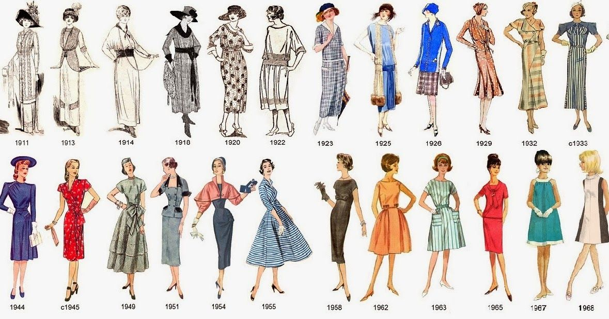

HISTORIA DE LA MODA
La historia de la moda es fascinante y ha evolucionado a lo largo de los siglos. Desde la antigüedad, la moda ha sido una forma de expresión y ha reflejado los valores, las costumbres y la cultura de cada época. Desde los vestidos largos y elegantes de la época victoriana hasta la ropa ajustada y moderna de la actualidad, la moda ha cambiado drásticamente a lo largo del tiempo. En este sentido, la línea del tiempo de la moda es una herramienta útil para entender y apreciar la evolución de la moda a lo largo de los siglos. A través de esta línea del tiempo, se pueden apreciar los cambios y las tendencias que han marcado cada época y cómo estas han influido en la moda actual. En este artículo, presentaremos una línea del tiempo de la moda que abarca desde la antigüedad hasta la actualidad, para que puedas descubrir cómo la moda ha evolucionado a lo largo de los siglos.
Orígenes y evolución del Diseño de Moda: ¿Cuándo surgió?
La moda ha sido una expresión cultural y artística desde hace siglos. Desde la antigua Grecia y Roma hasta la actualidad, la ropa y su diseño han sido un reflejo de los valores y las tendencias sociales de cada época. El diseño de moda como lo conocemos hoy en día, se originó en el siglo XIX con la creación de las primeras casas de moda. En 1858, el diseñador Charles Frederick Worth fundó la primera casa de moda en París, que se convirtió en el epicentro mundial de la moda. Worth introdujo la novedad de crear colecciones de moda completas y el concepto de que las prendas de vestir podían ser consideradas obras de arte. Con la llegada del siglo XX, el diseño de moda comenzó a evolucionar rápidamente. Se introdujeron nuevos materiales, como el nylon y el poliéster, y se experimentó con nuevas técnicas de producción. En los años 50, el surgimiento de la alta costura y las modelos de moda famosas, como la icónica Twiggy, contribuyeron a la popularidad y el glamour del mundo de la moda. En las décadas siguientes, el diseño de moda se expandió a nivel internacional, con la creación de semanas de la moda en ciudades como Nueva York, Londres, Milán y Tokio. La industria de la moda también comenzó a abarcar una variedad más amplia de estilos y tendencias, con la creación de la moda urbana, la moda étnica y la moda sostenible. Hoy en día, el diseño de moda es una industria mundial que genera miles de millones de dólares en ingresos. Desde la alta costura hasta la moda de la calle, la moda sigue siendo una forma de expresión y arte que refleja la cultura y las tendencias de cada época.
